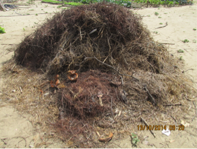

Antes de iniciarmos a nossa aula é importante conceituarmos o solo, conhecermos algumas das suas propriedades e como ele é formado.

Efeito Livro Dinâmico
INÍCIO DO EFEITO:
• A primeira,
a fase sólida, é constituída por material rochoso (local ou
transportado) e material orgânico, originário da decomposição
vegetal e/ou animal.
• A segunda, a fase líquida,
corresponde à água ou a solução do solo (elementos orgânicos e
inorgânicos em solução).
• A terceira fase, a gasosa, é de
composição variável, de acordo com os gases produzidos e consumidos
pelas raízes das plantas e dos animais (CO2 e O2).
Rochas são agregados de um ou vários minerais que formam as grandes
massas da crosta terrestre. A rocha pode ser formada de uma só
espécie mineral. Exemplos: calcário, constituído por calcita;
folhelhos formados por argila e quartzito formado por quartzo. As
rochas constituídas por mais de um mineral são as mais abundantes na
superfície da Terra. Exemplos: granito e basalto.
Observe
as figuras com abaixo com exemplos de rocha:
A matéria orgânica do solo inclui todos os compostos orgânicos, exceto os materiais não decompostos e os organismos vivos (biomassa). A matéria orgânica pode ajudar no aquecimento do solo e no suprimento de nutrientes para as plantas, permite troca de gases, estabiliza a estrutura e aumenta a permeabilidade.
Para que ocorra a formação do solo é necessária à ação dos agentes de intemperismo.
O site,
http://solonaescola.blogspot.com.br/2011/10/fatores-de-formacao-do-solo-4.html
e analise com seus colegas como os fatores climáticos podem
influenciar na formação dos solos.
O site,
http://pt.wikipedia.org/wiki/Intemperismo e aprenda mais sobre os
agentes do intemperismo.
Aprenda mais sobre os fatores de formação do solo visitando: O site, http://solonaescola.blogspot.com.br/2011/10/fatores-de-formacao-do-solo-4.html e analise com seus colegas como os fatores climáticos podem influenciar na formação dos solos. O site, http://pt.wikipedia.org/wiki/Intemperismo e aprenda mais sobre os agentes do intemperismo.
Responsável: Professora Nidia Barone
Universidade Federal do Ceará - Instituto UFC Virtual